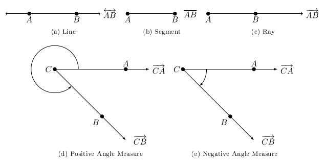

Section 1.1
Definition 1 (Angles)
Two distinct points \(A\) and \(B\) where a line passes through them is called \(\overleftrightarrow{AB}\).
The portion of the line between \(A\) and \(B\), including \(A\) and \(B\), is called a line segement, denoted \(\overline{AB}\).
The portion of the line \(\overleftrightarrow{AB}\) that starts at \(A\) and passes through \(B\) is called the ray \(\overrightarrow{AB}\). The point \(A\) is called the end point.
An angle consists of two rays in a plane with a common end point.
An angle consists of two rays in a plane with a common endpoint, or two line segments with a common endpoint. Each of these two rays (or segments) are called sides of the angle. The common endpoint is called the vertex. Angle is measured by rotating a ray starting at one side (the initial side) and ending at the other side (the terminal side). The positive direction of this rotation is counter-clockwise. It is also possible to complete more than one revolution.

The notation \(m(\angle A)\) is ``the measure of angle \(A\)’’ where \(A\) is the endpoint and vertex to the two existing rays.
There are 360 equal partitions to complete a single rotation, we call these partitions degrees. Each degree has 60 equal partitions called minutes*. Each minute has 60 equal partitions called seconds.
An angle measuring between \(0^{\circ}\) and \(90^{\circ}\) is an acute angle. An angle measuring exactly \(90^{\circ}\) is a right angle. An angle measuring more than \(90^{\circ}\) but less than \(180^{\circ}\) is an obtuse angle. An angle measuring exactly \(180^{\circ}\) is a straight angle.
When the sum of two angles equal \(90^{\circ}\) we say they are complementary and the two angles are complements of each other.
When the sum of two angles equal \(180^{\circ}\) we they are supplementary and the two angles are supplements of each other.
An angle in standard position if its vertex is at the origin and its initial side lies on the positive \(x\)-axis.
Angle measures that differ by a multiple of \(360^{\circ}\) are coterminal angles.